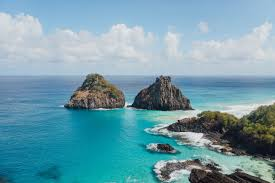

Explorando Fernando de Noronha: Um Paraíso Tropical
Escrito por: Caio Taveira
Fernando de Noronha, um arquipélago localizado no nordeste do Brasil, é um dos destinos mais deslumbrantes e preservados do país. Com suas praias paradisíacas, águas cristalinas e rica biodiversidade, este lugar é um verdadeiro paraíso tropical.
Minha história
Olá, viajantes! 🌍 Hoje eu quero compartilhar com vocês a experiência incrível que tive ao visitar Fernando de Noronha. Se você ama praias, mergulho e natureza intocada, este é o destino perfeito para você!
As Belezas Naturais
Fernando de Noronha é conhecido por suas praias de areia branca e águas azul-turquesa. A Baía do Sancho, frequentemente eleita uma das praias mais bonitas do mundo, é um dos pontos altos da viagem. Além disso, a vida marinha é espetacular, com tartarugas, golfinhos e uma variedade de peixes coloridos.
Atividades e Dicas
- Faça um mergulho: As águas cristalinas de Noronha são perfeitas para mergulho e snorkel.
- Visite a Baía dos Porcos: Uma das praias mais bonitas do arquipélago, com formações rochosas impressionantes.
- Leve protetor solar e repelente: O sol é forte e há muitos mosquitos na ilha.
Conclusão
Fernando de Noronha é um destino que oferece uma experiência única e inesquecível. Seja para relaxar nas praias paradisíacas, explorar a vida marinha ou simplesmente se maravilhar com a beleza natural, este é um lugar que todos deveriam visitar pelo menos uma vez na vida.